histogram(student$G3)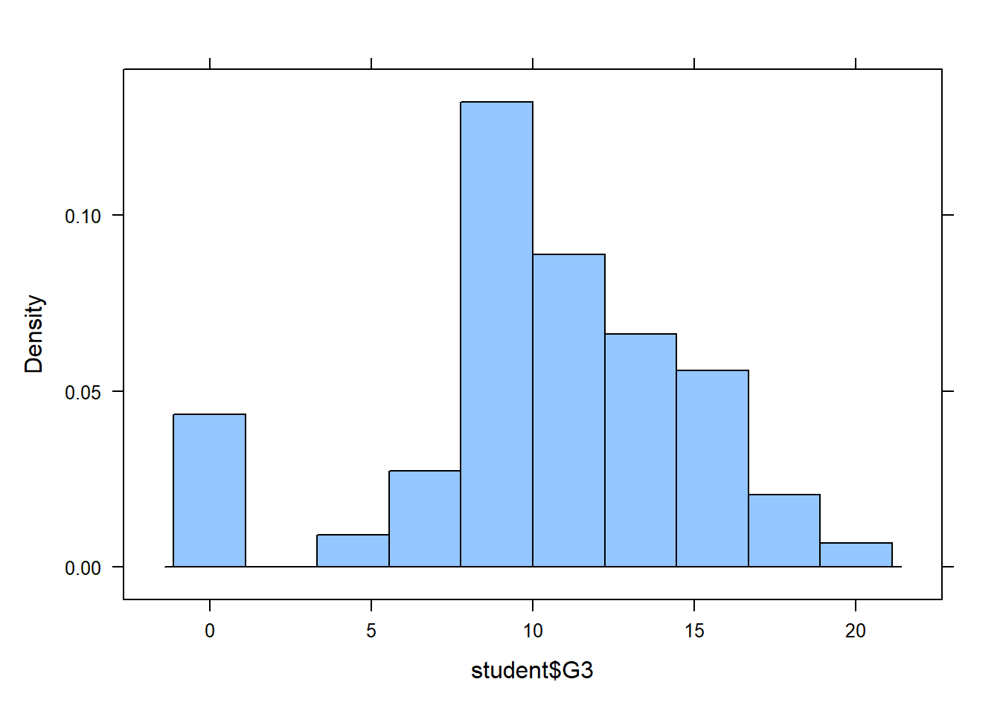
boxplot(student$G3 ~ student$Medu, main = "Student Final Academic Grade with different Mother Education Level", xlab = "Student Mother Education Level", col=c(2,3,4,5,6))Unit 2 Review
In this activity, you will use everything we’ve covered up to this point including:
We will be using data collected about students in 2 Portuguese schools including their final grade. The goal is to answer research questions using statistical methods to see what factors significantly impact final grades.
In class, we have reinforced a process for approaching a new dataset. The following is a summary of activities that help us conduct good research:
favstats()), visualize the data (histogram(), boxplot()).unique())data %>% filter() %>% select())t.test(), aov())All these activities are important, but we may spend more or less time on any one of them depending on the state of the data.
Take some time to familiarize yourself with the data. Check the website to see what the columns are.
What is the response variable? A: The final grade, G3
Create a histogram of the response variable.
histogram(student$G3)
boxplot(student$G3 ~ student$Medu, main = "Student Final Academic Grade with different Mother Education Level", xlab = "Student Mother Education Level", col=c(2,3,4,5,6))What do you notice about the shape of the distribution?
:It’s close to symmetric, but there’s a gap around x = 3.
What anomalies, if any, do you notice?
:The density at x = 0 is way higher than its surrounding area.
Calculate summary statistics for the response variable.
favstats(student$G3) %>% knitr::kable()| min | Q1 | median | Q3 | max | mean | sd | n | missing | |
|---|---|---|---|---|---|---|---|---|---|
| 0 | 8 | 11 | 14 | 20 | 10.41519 | 4.581443 | 395 | 0 |
Question: What is the minimum?
Answer: 0
Question: What is the maximum?
Answer: 20
Question: How many students participated in the survey?
Answer: 395
Question: Rank order the top 5 explanatory variables you think most influence the response and identify each as a categorical or quantitative variable:
NOTE: Some of the above variables may be quantitative, which is great! Next unit will cover how to analyze those relationships. This assignment, however, focuses on comparing differences between groups and only considers categorical explanatory variables variables.
Sometimes even correct data can have issues that must be addressed. For example, categories are often labeled as numbers. Software can’t guess when numbers are supposed to be categories, so we have to tell R when a number should be treated as a category.
To force a variable to be a category, we use the factor() function in R. We can change the variable type in the data itself or change it in the analysis. We demonstrate both methods below.
Father’s education, Fedu, shows up as a number in R. The website suggests that the numbers represent categories (0 = none, 1 = primary education (4th grade), 2 = 5th to 9th grade, 3 = secondary education or 4 = higher education).
To change the data type in the data itself, we can use a ‘mutate’ statement in the following manner:
# Create a new dataset called fedu_data that begins with the clean data and adds a column that we called Fedu_factor, which is the factorized column, Fedu:
# mutate: create new column
new_data <- student %>%
mutate(Fedu_factor = factor(Fedu))
# Check the column names of the new dataset. Notice the new column
# names('dataset') shows all of the column names
names(new_data)
# glimpse() shows us data types. Notice after Fedu_factor, the <fct>, which shows us that this is in fact, a factor variable type. <dbl> stands for "double" and is a numeric variable type
glimpse(new_data)You may not want to bother changing all the variable types for each potential analysis. Fortunately, you can create a factor “on the fly” within the analysis function itself.
Because there are more than 2 levels of Father’s Education, I will demonstrate how this is done in an ANOVA:
# Force Fedu to be treated like a category in ANOVA:
fedu_anova <- aov(student$G3 ~ factor(student$Fedu)) #method 1: using factor() to convert the original column
summary(fedu_anova) Df Sum Sq Mean Sq F value Pr(>F)
factor(student$Fedu) 4 238 59.53 2.891 0.0222 *
Residuals 390 8032 20.59
---
Signif. codes: 0 '***' 0.001 '**' 0.01 '*' 0.05 '.' 0.1 ' ' 1fedu_anova2 <- aov(new_data$G3 ~ new_data$Fedu_factor) #method 2: using the new data set and the new factor columnError in eval(predvars, data, env): object 'new_data' not foundsummary(fedu_anova2)Error in h(simpleError(msg, call)): error in evaluating the argument 'object' in selecting a method for function 'summary': object 'fedu_anova2' not foundThis works with most analysis functions including t.test() and aov().
NOTE: You only have to do this for variables in a dataset that are ‘categories labeled as numbers.’ If the categories are text, t.test() and aov() automatically recognizes the variable as categorical. However, it does no harm to put a column with text into a factor() statement.
While exploring the data, you may have noticed a few students ended up with a final grade of zero. While it may be interesting to explore what factors lead to an incomplete grade, we want to make conclusions about students who completed the course.
Create a clean dataset called, clean, that excludes zeros for G3. This will be used for the following analyses.
clean <- student %>%
filter(student$G3 > 0)
histogram(clean$G3)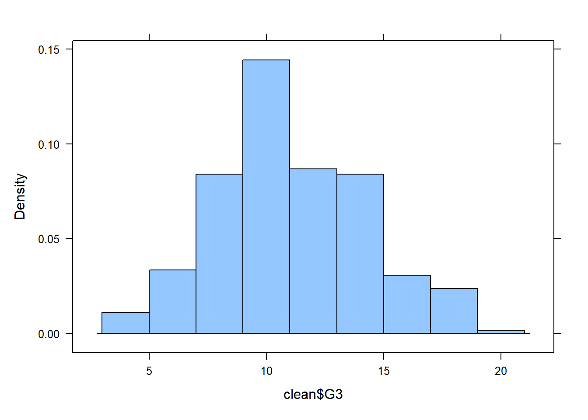
names(clean) [1] "school" "sex" "age" "address" "famsize"
[6] "Pstatus" "Medu" "Fedu" "Mjob" "Fjob"
[11] "reason" "guardian" "traveltime" "studytime" "failures"
[16] "schoolsup" "famsup" "paid" "activities" "nursery"
[21] "higher" "internet" "romantic" "famrel" "freetime"
[26] "goout" "Dalc" "Walc" "health" "absences"
[31] "G1" "G2" "G3" Suppose the Gabriel Pereira school (GP) has more stringent admissions requirements. We suspect this would lead to higher grades, on average.
Create a side-by-side boxplot of the final grades for each school. Change the y-axis label to read “Final Grade out of 20”, the x-axis label to read “School”, and add a title.
boxplot(clean$G3 ~ clean$school, xlab = "School", ylab="Final Grade out of 20", main = "Student Final Grades from Different School", col = c(2,3))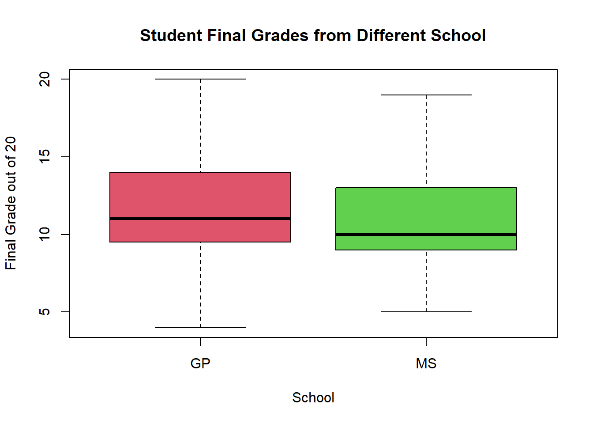
Question: What do you notice?
Answer: GP, Gabriel Pereira school, has the higher student final grades than MS, Mousinho da Silveira school.
Create a table of summary statistics of final grade for each school:
favstats(clean$G3 ~ clean$school) %>% knitr::kable()| clean$school | min | Q1 | median | Q3 | max | mean | sd | n | missing |
|---|---|---|---|---|---|---|---|---|---|
| GP | 4 | 9.5 | 11 | 14 | 20 | 11.62222 | 3.241866 | 315 | 0 |
| MS | 5 | 9.0 | 10 | 13 | 19 | 10.78571 | 3.056666 | 42 | 0 |
Create a qqPlot to look at the normality of both groups:
qqPlot(clean$G3 ~ clean$school)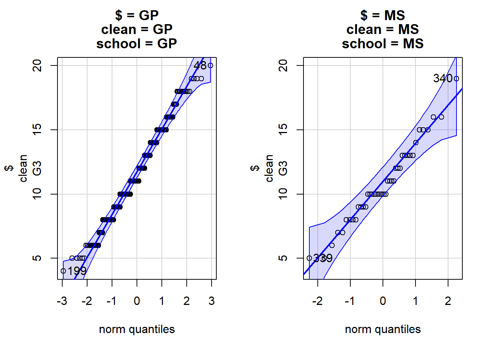
Question: Do the grades look normally distributed for both groups? If not, should we be concerned?
Answer: Yes, they look normally distributed. Even if they are not, since the amount of data are both bigger than 30, which are normal distributed as well(according to CLT).
Question: Can we trust the P-value?
Answer: Yes since both groups are normally distributed.
State your null and alternative hypotheses and significance level.
NOTE: Recall that R uses alphabetical order to determine which group is the reference group. It is useful to put this group on the left side of the null hypothesis and set your alternative hypothesis accordingly.
\[H_o: u_{GP} = u_{MS}\]
\[H_a: u_{GP} > u_{MS}\]
\[\alpha = 0.05\]
Perform the appropriate statistical test:
t.test(clean$G3 ~ clean$school, alternative = "greater")
Welch Two Sample t-test
data: clean$G3 by clean$school
t = 1.6539, df = 54.062, p-value = 0.05197
alternative hypothesis: true difference in means between group GP and group MS is greater than 0
95 percent confidence interval:
-0.009944032 Inf
sample estimates:
mean in group GP mean in group MS
11.62222 10.78571 Question: What is the P-value?
Answer: p-value = 0.05197
Question: What is your conclusion in context of the research question?
Answer: I have sufficient evidence to suggest Gabriel Pereira School has the same average student final grade with Mousinho da Silveira School.
Create a \((1-\alpha)\)% confidence interval and explain it in context of the research question.
t.test(clean$G3 ~ clean$school, conf.level = 1-0.05)$conf.int[1] -0.1775092 1.8505250
attr(,"conf.level")
[1] 0.95Explanation: I’m 95% confident that the difference student final grade between Gabriel Pereira School and Mousinho da Silveira School, on average, is located between -0.1775092 and 1.8505250.
We suspect there is a difference between the second period and the final grade, though we do not know if they go up or down. Carry out a hypothesis test to evaluate this suspicion.
Choose how you will define the difference between final grade and second period grade, and create a new object called diff:
diff <- clean$G3 - clean$G2 # If diff > 0, it means G3 > G2, the grade goes up. Vice VersaQuestion: What does a negative number mean?
Answer: G3 < G2, the grade goes down.
Create a qqPlot() of diff and check for normality:
qqPlot(diff)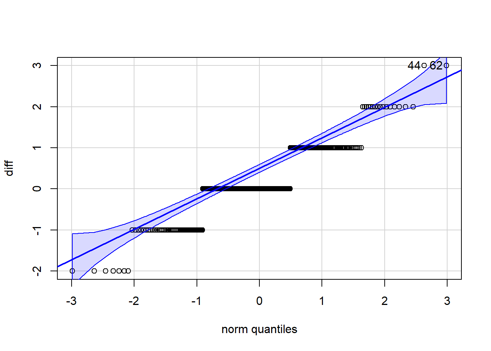
[1] 44 62favstats(diff) min Q1 median Q3 max mean sd n missing
-2 0 0 1 3 0.1652661 0.8400931 357 0Question: Do the grade differences look normally distributed? If not, should we be concerned?
Answer: No, it looks skewed. However, since the amount of data is bigger than 30 (357 > 30), we don’t need to be concerned about it.
Question: Can we trust the P-value?
Answer: Yes you can, since the amount of data > 30, it’s normally distributed.
State your null and alternative hypothesis and choose a significance level:
\[H_o: u_{diff} = 0\]
\[Ha: u_{diff} > 0\]
\[\alpha = 0.05\]
Perform the appropriate analysis.
t.test(diff, alternative = "greater")
One Sample t-test
data: diff
t = 3.717, df = 356, p-value = 0.000117
alternative hypothesis: true mean is greater than 0
95 percent confidence interval:
0.09194109 Inf
sample estimates:
mean of x
0.1652661 Question: What is the P-value?
Answer: p-value = 0.000117
Question: What conclusion do you make in context of this research question?
Answer: I have sufficient evidence to suggest that the average final grade is higher than the second period grade.
Create a \((1-\alpha)\)% confidence interval for the differences and explain it in context of the research question.
t.test(diff, conf.level = 1-0.05)$conf.int[1] 0.07782404 0.25270817
attr(,"conf.level")
[1] 0.95Explanation: I’m 95% confident that the difference between student final grade and second period grade, on average, is located between 0.07782404 and 0.25270817.
In 2021, Portugal reported having 0% absenteeism for 15-year-olds. We suspect that the actual absenteeism is higher than the reported value (zero).
Create a qqPlot() for absences.
fifteen_absences <- clean %>%
filter(clean$age == 15)
qqPlot(fifteen_absences$absences)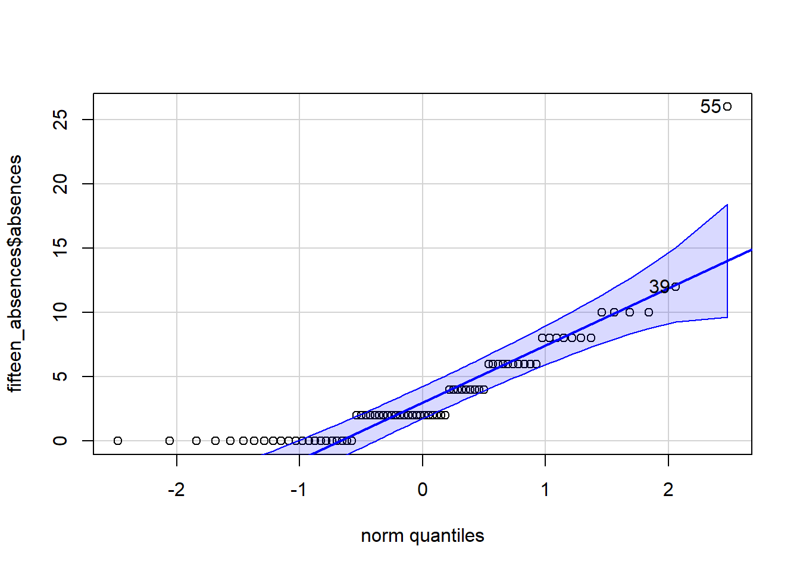
[1] 55 39favstats(fifteen_absences$absences) min Q1 median Q3 max mean sd n missing
0 0 2 6 26 3.605263 4.118508 76 0Question: Do absences look normally distributed? If not, should we be concerned?
Answer: It looks alright, just with some skewed dots in the bottom part. Since the amount of data is big enough (357 > 30), we know it’s normally distributed.
Question: Can we trust the P-value?
Answer: Yes since the data is normally distributed.
State your null and alternative hypotheses and choose a significance level:
\[H_o: u_a = 0\]
\[H_a: u_a > 0\]
\[\alpha = 0.05\]
Perform the appropriate analysis.
t.test(fifteen_absences$absences, alternative = "greater")
One Sample t-test
data: fifteen_absences$absences
t = 7.6314, df = 75, p-value = 2.991e-11
alternative hypothesis: true mean is greater than 0
95 percent confidence interval:
2.818474 Inf
sample estimates:
mean of x
3.605263 Question: What is the P-value?
Answer: p-value = 2.991e-11
Question: What conclusion do you make in context of this research question?
Answer: I have sufficient evidence to suggest that the 15 year-old school absence times, on average, is bigger than 0.
Create a \((1-\alpha)\)% confidence interval for average absences and interpret it in context of the problem.
t.test(fifteen_absences$absences, conf.level = 1-0.05)$conf.int[1] 2.664144 4.546382
attr(,"conf.level")
[1] 0.95Explanation: I’m 95% confident that the average number of school absence of 15 year-old students is located between 2.664144 and 4.546382.
The level of education of the mother in the home is thought to have a significant impact on student success.
Create a side-by-side boxplot of final grades for each level of mother’s education.
boxplot(student$G3 ~ student$Medu, main = "Student Final Academic Grade with different Mother Education Levels", xlab = "Student Mother Education Levels", col=c(2,3,4,5,6))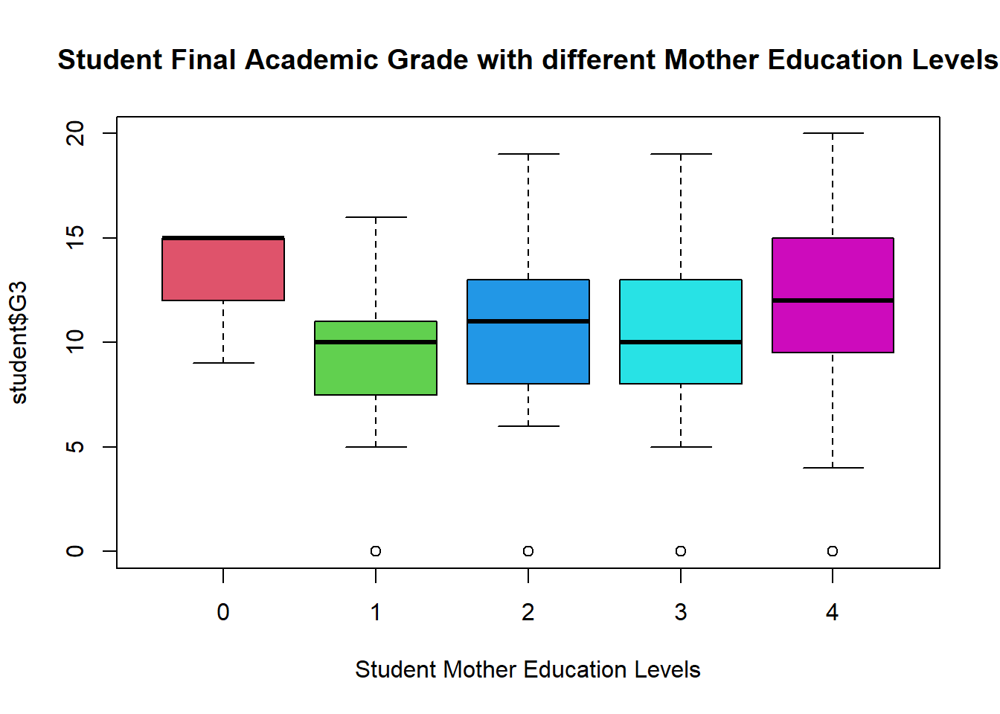
Create a table of summary statistics of final grades for each level of mother’s education.
favstats(student$G3 ~ student$Medu) %>% knitr::kable()| student$Medu | min | Q1 | median | Q3 | max | mean | sd | n | missing |
|---|---|---|---|---|---|---|---|---|---|
| 0 | 9 | 12.0 | 15 | 15 | 15 | 13.000000 | 3.464102 | 3 | 0 |
| 1 | 0 | 7.5 | 10 | 11 | 16 | 8.677966 | 4.364594 | 59 | 0 |
| 2 | 0 | 8.0 | 11 | 13 | 19 | 9.728155 | 4.636163 | 103 | 0 |
| 3 | 0 | 8.0 | 10 | 13 | 19 | 10.303030 | 4.623486 | 99 | 0 |
| 4 | 0 | 9.5 | 12 | 15 | 20 | 11.763359 | 4.267646 | 131 | 0 |
Question: How many respondents have a mother with no formal education (level 0)?
Answer: 3
Create a new dataset, clean_medu, that does not include mother’s education level 0.
clean_medu <- clean %>%
filter(clean$Medu > 0)
favstats(clean_medu$G3 ~ clean_medu$Medu)%>% knitr::kable()| clean_medu$Medu | min | Q1 | median | Q3 | max | mean | sd | n | missing |
|---|---|---|---|---|---|---|---|---|---|
| 1 | 5 | 9 | 10 | 12.00 | 16 | 10.24000 | 2.495383 | 50 | 0 |
| 2 | 6 | 10 | 11 | 13.00 | 19 | 11.25843 | 2.736654 | 89 | 0 |
| 3 | 5 | 9 | 11 | 13.75 | 19 | 11.33333 | 3.424958 | 90 | 0 |
| 4 | 4 | 10 | 13 | 15.00 | 20 | 12.32800 | 3.475202 | 125 | 0 |
Create another boxplot with the new dataset that excludes level 0.
boxplot(clean_medu$G3 ~ clean_medu$Medu, main = "Student Final Academic Grade with different Mother Education Levels", xlab = "Student Mother Education Levels", col=c(2,3,4,5))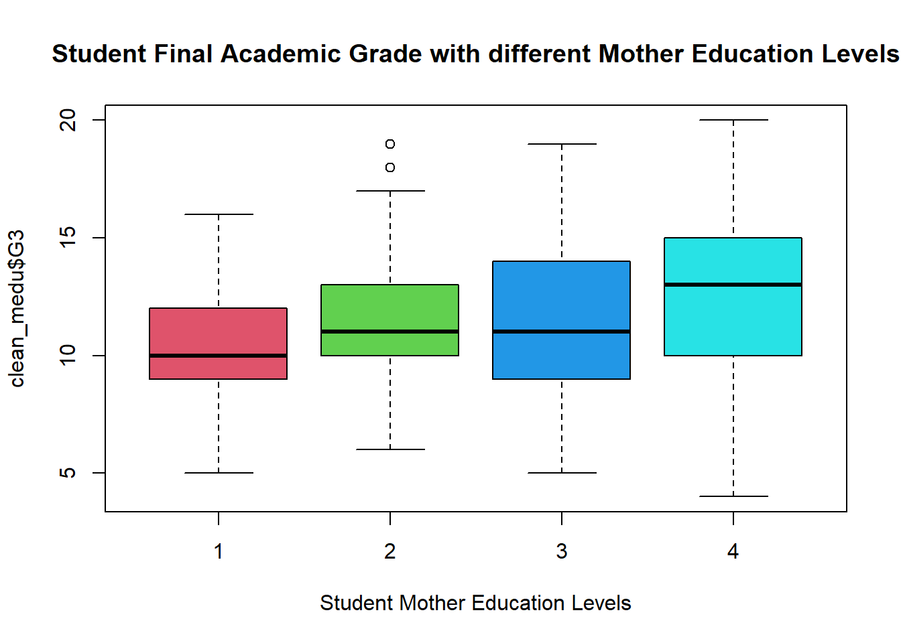
Create a summary table of final grades for each level of a mother’s education with the new dataset.
favstats(clean_medu$G3 ~ clean_medu$Medu) %>% knitr::kable()| clean_medu$Medu | min | Q1 | median | Q3 | max | mean | sd | n | missing |
|---|---|---|---|---|---|---|---|---|---|
| 1 | 5 | 9 | 10 | 12.00 | 16 | 10.24000 | 2.495383 | 50 | 0 |
| 2 | 6 | 10 | 11 | 13.00 | 19 | 11.25843 | 2.736654 | 89 | 0 |
| 3 | 5 | 9 | 11 | 13.75 | 19 | 11.33333 | 3.424958 | 90 | 0 |
| 4 | 4 | 10 | 13 | 15.00 | 20 | 12.32800 | 3.475202 | 125 | 0 |
sds = favstats(clean_medu$G3 ~ clean_medu$Medu)$sd
max(sds)/min(sds)[1] 1.392653Question: What is the maximum standard deviation?
Answer: 3.475202
Question: What is the minimum standard deviation?
Answer: 2.495383
Question: Verify that the maximum is less than twice as large as the minimum to check the “equality of standard deviations”.
Answer: Yes, the ratio of maximum and minimum of standard deviations is 1.392653.
State your null and alternative hypotheses and pick alpha:
\[H_o: u_1 = u_2 = u_3 = u_4\]
\[H_a: At\ least\ one\ of\ them\ not\ equals\ to\ one\ another.\]
\[\alpha = 0.05\]
Perform the appropriate statistical test.
aov_medu <- aov(clean_medu$G3 ~ clean_medu$Medu)
summary(aov_medu) Df Sum Sq Mean Sq F value Pr(>F)
clean_medu$Medu 1 157 157.5 15.74 8.8e-05 ***
Residuals 352 3521 10.0
---
Signif. codes: 0 '***' 0.001 '**' 0.01 '*' 0.05 '.' 0.1 ' ' 1Question: What is the test statistic?
Answer: F-value = 15.74
Question: What is the P-value?
Answer: P-value = 8.8e-05
Check the normality of the residuals.
qqPlot(aov_medu$residuals)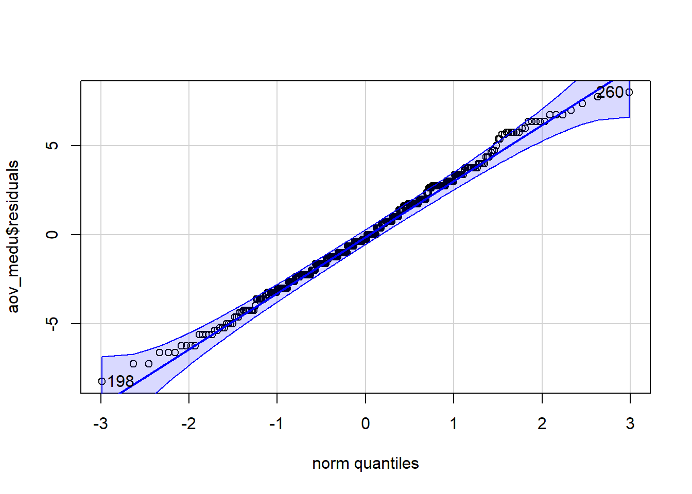
[1] 198 260Question: Do the residuals appear roughly normally distributed?
Answer: Yes. It looks normally distributed according to qqPlot graph.
Question: Can we trust the P-value.
Answer: Yes since the data is normally distributed.
State your conclusion: I have sufficient evidence to suggest that the student final grades among different mother education levels, on average, are not equal to each other.
Pick another variable that was not analyzed above: failures (number of past class failures, Categorical)
Create a side-by-side boxplot. Be sure to properly label the graph and add sufficient information so readers can know what they are looking at without having to search through the report or code.
favstats(clean$G3 ~ clean$failures) clean$failures min Q1 median Q3 max mean sd n missing
1 0 5 10.00 11.5 14.00 20 11.942177 3.193432 294 0
2 1 5 8.00 10.0 12.00 18 10.150000 2.597336 40 0
3 2 4 7.75 9.0 9.25 15 8.833333 3.010084 12 0
4 3 5 7.00 8.0 10.00 10 8.272727 1.678744 11 0boxplot(clean$G3 ~ clean$failures, xlab = "Number of Past Class Failures (n if 1<=n<=3, else 4)", ylab = "Final Grade out of 20", main = "Student Final Grades with Number of Past Class Failures", col = c(2,3,4,5))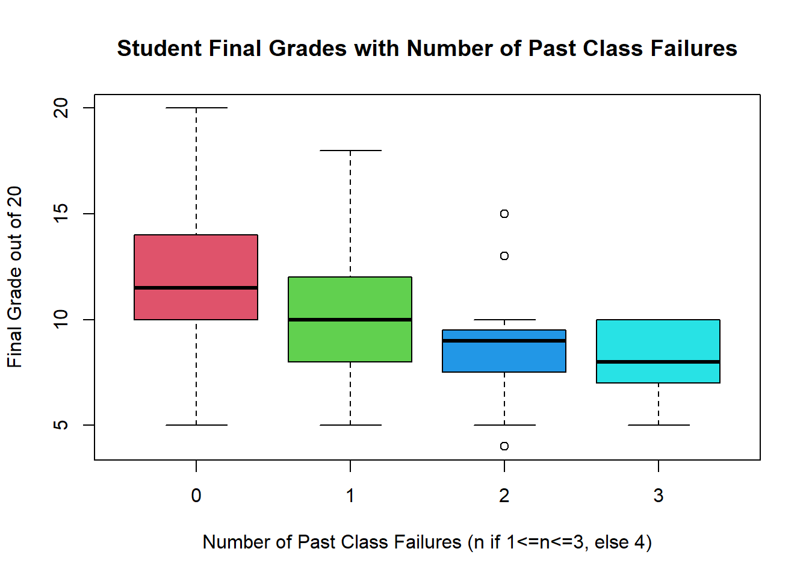
Perform the appropriate analysis. Be sure to include a concise conclusion in the context of the research question, including a hypothesis test (and confidence interval if applicable.)
Hypothesis Statement: \[H_o = u_0 = u_1 = u_2 = u_3 \] \[H_a = At\ least\ one\ of\ the\ mean\ not\ equals\ to\ one\ another.\] \[\alpha = 0.05\]
aov_failure <- aov(clean$G3 ~ clean$failures)
summary(aov_failure) Df Sum Sq Mean Sq F value Pr(>F)
clean$failures 1 320 320.2 33.55 1.53e-08 ***
Residuals 355 3389 9.5
---
Signif. codes: 0 '***' 0.001 '**' 0.01 '*' 0.05 '.' 0.1 ' ' 1Question: What is the test statistic?
Answer: F-value = 33.55
Question: What is the P-value?
Answer: P-value = 1.53e-08
Check the normality of the residuals.
sds_failure <- favstats(clean$G3 ~ clean$failures)$sd
max(sds_failure) / min(sds_failure)[1] 1.902275qqPlot(aov_failure$residuals)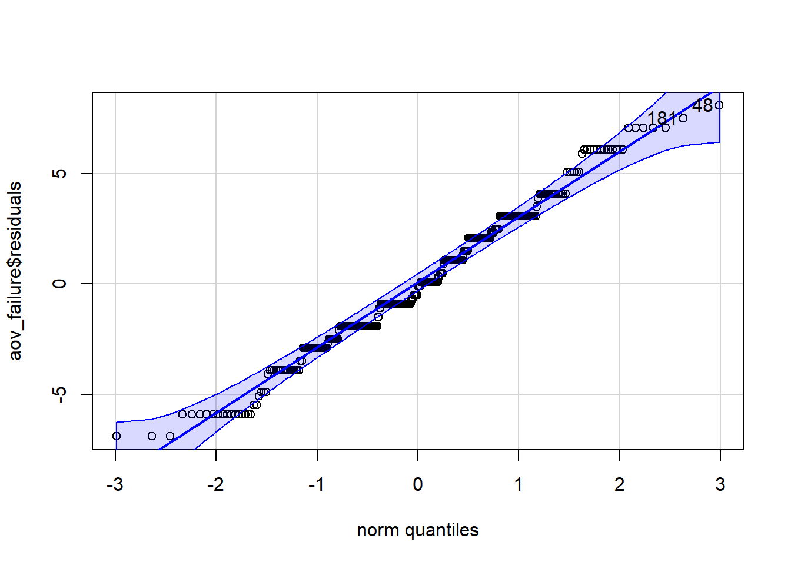
[1] 48 181Question: Do the residuals appear roughly normally distributed?
Answer: Yes. It looks normally distributed according to qqPlot graph.
Question: Can we trust the P-value.
Answer: Yes since the data is normally distributed according to the equal standard deviation test result (1.902275 < 2, test passed) and qqPlot graph.
State your conclusion: I have sufficient evidence to suggest that the student final grades among different past class failures, on average, are not equal to each other.